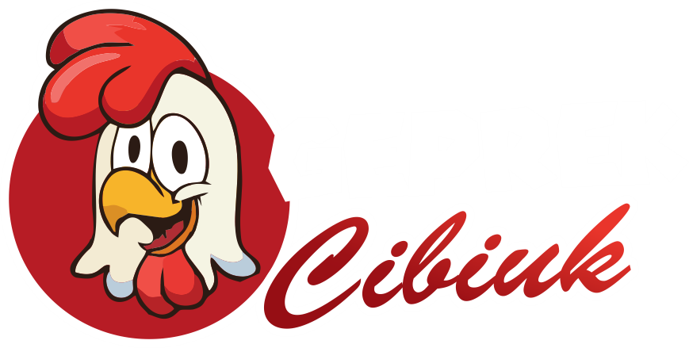
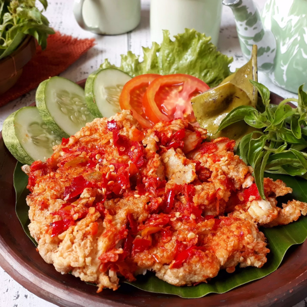
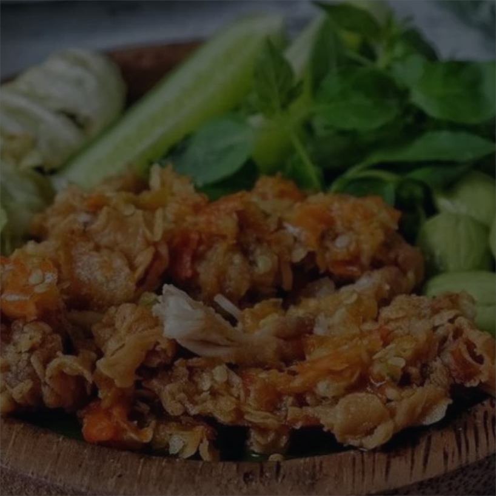

The Next Level
Ayam Geprek
About Us
Geprek Cibiuk adalah grup dari Rumah Makan Cibiuk (RMC) Indonesia yang hadir fokus melayani kaum milenials di Indonesia dengan cita rasa Ayam Super Crispy yang gurih serta sambal geprek yang kaya akan rempah Indonesia!
Berpengalaman
RMC Indonesia telah hadir melayani masyarakat di Indonesia lebih dari 20 tahun tepatnya sejak 1998 dengan carang pertama (pusat) di Kota Garut.
Berpedoman
RMC Indonesia berpedoman pada Standard Operational Procedures (SOP) yang baku dan berfokus pada kualitas makanan yang disajikan.
Berkomintmen
RMC Indonesia berkomitmen pada pelayanan dengan tujuan utama kepuasan pelanggan yang memperhatian aspek kecepatan dan keramah tamahan.
Follow Us on Instagram
Dapatkan update terbaru di Instagram!
@geprekcibiuk

